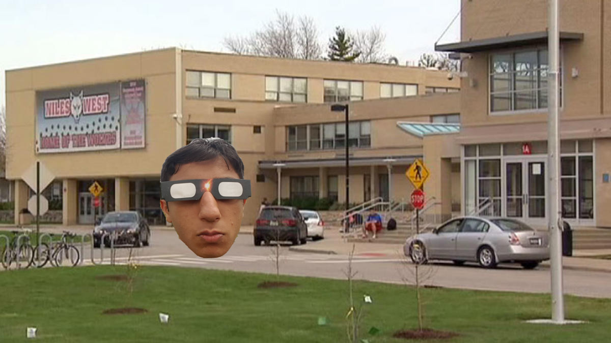

Otros sitios
Sitio Web de Jay Monga
- Mi Casa
|
Tengo una casa no muy grande, pero lo suficientemente grande. Hay tres cuartos, uno por mí, mi hermano, y mis padres. Sin embargo, mi cuarto es el menor. Apenas hay espacio por mi escritorio y computadora. Aunque no me queja mucho de eso. Para continuar, hay tres televisiones en mi casa, y con el televisor más grande hay equipo de sonido muy fuerte. También hay una cinta de correr que use a veces. En la cocina, hay una microondas y un horno para calentar la comida. Además, hay un televisor cerca de la mesa para ver el televisor cuando estoy comiendo. Todo en mi casa está en los tres niveles. |
- Mi Coche
|
Todos los días, manejo mi coche a la escuela. Uso un Toyota Camry 2009, y el viaje es muy cómodo. Tan pronto como entro mi coche, conecto mi teléfono en el cable AUX. Mientras estoy manejando, siempre escucho la música rap, específicamente Eminem. Mi coche tiene un sistema de sonido muy fuerte y la música siempre tiene un buen sonido. Por lo general, sólo manejo a la escuela y mi casa. Pero a veces, me gusta ir a los restaurantes con mis amigos. En los viajes, uso mucho gasolina que cuesta mucho dinero. Por eso, quiero montar en bicicleta cuando pueda. |
- Mi Comida
|
Me gusta mucho comer. Si tengo el dinero y el tiempo, siempre quiero ir afuera para comer. Por lo general, voy a los restaurantes un poco barato como Chipotle u otra comida rápida. Siempre ir con mis amigos después de clubes o deportes. Cada vez que yo voy a un restaurante, gastar algún dinero, y a veces mucho dinero. Una vez en cuando, necesito pedir prestado a un amigo por dinero si no tengo bastante. La deuda puede ser un problema si hay mucho, y a veces es difícil dar todo el dinero. Por ejemplo, no tengo dinero ahora y un amigo pago mi comida en Pita Inn ayer. Sin embargo, ir a los restaurantes con amigos o familia nunca es una idea mal. Es divertido explorar y tratar comida diferente. |
- Mi Escuela
|  |
Asisto al colegio Niles West en Skokie. No es muy grande, pero hay muchos estudiantes y muchos servicios también. Además, hay facultad muy experimentada e inteligente. Hay clases que me gusten mucho y me provean un ambiente para explorar mis pasiones. Aún, la escuela no es perfecta. Me aburren mucho algunas clases como inglés y estadísticas. Hay profesores muy estrictos que quieren dar mucha tarea. Y el peor, la comida en el cafetería es muy asco. Aún, la experiencia de asistir eso colegio me enseña mucho. Voy a extrañar la escuela. |
- Mis Clubes
|
Yo hago mucho después de mis clases. Tengo muchos clubes, como los equipos de matemáticas, robots, tenis y tenis de mesa. Ellos siempre usan muchas horas de mi día, pero son divertidos. Hay muchos beneficios de la participación también. Puedo aprender mucho en mis clubes y actividades. Los clubes con competencias son los más divertidos porque dejarme perder la escuela y los exámenes. Además, viajar a otros lugares por competencias es muy divertida. La experiencia de ver muchas estrellas es inolvidable. Por lo general, me divierto en mis clubes y son una parte de mi vida muy importante. Si puedo viajar al tiempo pasado, pasa más tiempo para mis clubes. |
- Mi Futuro
|
Por muchos años, creía que voy a ser veterinario. Cuando unos años pasan, mi sueño ha cambiado y quería un trabajo en el tema de computadoras. Al principio, quería hacer videojuegos. Pero con mi experiencia en el club de robots, moví mi sueño para ser programador para los robots. Creo que este tema puede ser muy importante en el futuro. Para estudiar los robots, voy a asistir la universidad Berkeley en California. Esta universidad tiene un programa muy bien por los estudios de matemáticas e informática. También, el lugar es perfecto para recibir trabajos en la informática. Todas las compañías contratar a estudiantes de universidad. En fin, quiero recibir un trabajo a una compañía como SpaceX. |
- Mi Computadora
 |
Mi computadora no es tradicional. No compre en una tienda. Yo lo hecho con partes de Microcenter. Hice esto porque computadoras a medida son más baratas y fuertes de otras computadoras. Necesitaba una computadora muy fuerte para jugar videojuegos. Cuando aprendí que otras computadoras cuestan mucho dinero, decidí hacer mi computadora. Tenía un poco miedo porque las partes cuestan mucho dinero, pero sentía más cómodo con tiempo. Después de que yo hiciera la computadora, necesitaba comprar una pantalla, teclado y ratón. No cuestan mucho dinero y fue necesario para la experiencia. Ahora, tengo una computadora muy fuerte que no va a desacelerar. |
- Mis Amigos
|
Paso mucho tiempo con mis amigos. En línea o cara a cara, hablamos por muchas horas en una semana. Divertimos en jugar videojuegos o deportes afuera. También a nosotros nos gusta la comida de los restaurantes baratos. Conocí casi todos mis amigos en la escuela. Cuando tenemos las mismas clases, es muy fácil llegar a conocerse. Además, estoy en muchos clubes con mis amigos. En mis cuatro años de escuela, conocí muchas personas y cree muchas amistades. Doy gracias por todos mis amigos yo tengo. Por eso, no quiero repetir mis años de colegio. |
- Mis Deportes
|
Cuando era niño, no me gustaba jugar a los deportes. Sólo quería jugar videojuegos. Sin embargo, empecé a disfrutar tenis. Por la primera vez, me gusta la actividad física. Con el tiempo, poco a poco me gusta el tenis cada vez más. Empecé a ver tenis en el televisor también y puedo decir todos los jugadores el diez más alto. Además, me interesa mucho el tenis de mesa. Este año, juego al tenis y tenis de mesa competitivo. Me gustan otros deportes también como spikeball y frisbee. Probablemente voy a jugar a los deportes en la universidad. |
- Mi Pasatiempo
|
Me gusta mucho usar mi pasatiempo. Hay tantas oportunidades para divertirme. Por ejemplo, puedo jugar videojuegos con mis amigos. También puedo jugar al tenis con ellos. Es posible ver una película nueva en el cine con mis amigos o solo. Si quiero, puedo escuchar música. Una vez en cuando, me gusta hacer ejercicio. Más raro, pero leer un libro no es malo. Todos los opciones no son muy productivos, pero es bueno. No pasa nada si yo termino el trabajo. |